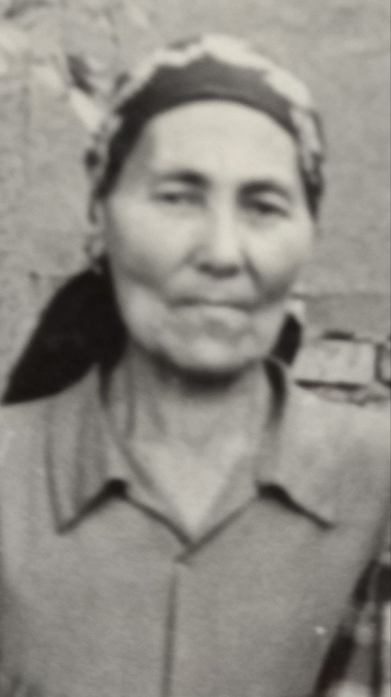

Xatima
Xatima ona
Xatima ona

Xatima
Tug'ildi:
1915
Vafoti:
26 iyun 1989
Otasi: Shog'ofur
Onasi: Xayrinisa
Turmush o'rtog'i:
Mirjalol
2 turmush o'rtog'i Sobir
Farzandlari: Mirabbos
Mirvaqqos
2 turmush o'rtog'idan Sobit
2 turmush o'rtog'idan Somi
2 turmush o'rtog'idan Salima
2 turmush o'rtog'idan
Muslima
Tarkib
- 1 Hayoti
- 2 Oilasi
Hayoti
Xatima yoshligidan ko'p qiyinchiliklarni boshdan kechirganlar
Oilasi
Farzandlar 6 ta.